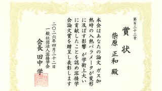
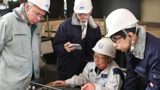
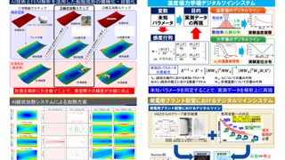
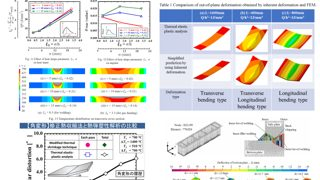
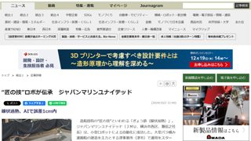
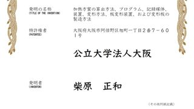

※画像は生成AIで作成したイメージです。このテーマの説明文は準備中です。
関連するページ
関連するお知らせ（題名から自動で集めたもの。31件）

受賞：溶接学会(大阪大学中之島センター)にて溶接学会総会があり、柴原研究室で執筆した論文「ガス加熱時の入熱パラメータが変形に及ぼす影響」が「溶接学会論文賞」を受賞しました。 特許：柴原正和 教授、生島一樹 准教授、前川真奈海さん(現川崎重工業)、芦田崚さん(現日揮)、橋詰光さん(現NEC)、木谷悠二さん(現DMG森精機)、山田祐介さん(現シマノ)、D3加藤拓也 さんが「線状加熱」 に関する国際特許(中国)を取得しました。
特許：柴原正和 教授、生島一樹 准教授、前川真奈海さん(現川崎重工業)、芦田崚さん(現日揮)、橋詰光さん(現NEC)、木谷悠二さん(現DMG森精機)、山田祐介さん(現シマノ)、D3加藤拓也 さんが「線状加熱」 に関する国際特許(中国)を取得しました。 報告：JMU津事業所を訪問し、柴原研究室と共同開発している AI 線状加熱ロボットの製造現場における運用状況を見学しました。
報告：JMU津事業所を訪問し、柴原研究室と共同開発している AI 線状加熱ロボットの製造現場における運用状況を見学しました。 記事掲載：柴原正和 教授、加藤拓也 さん 他が執筆した、開発中の「AI線状加熱」に関する解説記事が「ぷらすとす(日本塑性加工学会会報誌)」に掲載されました。
記事掲載：柴原正和 教授、加藤拓也 さん 他が執筆した、開発中の「AI線状加熱」に関する解説記事が「ぷらすとす(日本塑性加工学会会報誌)」に掲載されました。 報告：柴原正和教授が、ダイキン工業 TIC (テクノロジー・イノベーションセンター) において、大規模溶接解析および溶接・ガス加熱工程のデジタルツインに関する講演を行いました。
報告：柴原正和教授が、ダイキン工業 TIC (テクノロジー・イノベーションセンター) において、大規模溶接解析および溶接・ガス加熱工程のデジタルツインに関する講演を行いました。 報告：柴原研究室・生島研究室合同の冬季中間発表会が行われました。FEM等の数値シミュレーションを活用した溶接、接合、ひずみ取り、プレス、切削、金属積層造形、AI、デジタルツイン等に関する幅広い内容の研究発表が行われ、活発な議論がなされました。
報告：柴原研究室・生島研究室合同の冬季中間発表会が行われました。FEM等の数値シミュレーションを活用した溶接、接合、ひずみ取り、プレス、切削、金属積層造形、AI、デジタルツイン等に関する幅広い内容の研究発表が行われ、活発な議論がなされました。
報告：JMU津事業所を訪問し、柴原研究室と共同開発している AI 線状加熱ロボットの製造現場における運用状況を見学しました。 特許：柴原正和 教授、生島一樹 准教授、前川真奈海さん(現川崎重工業)、芦田崚さん(現日揮)、橋詰光さん(現NEC)、木谷悠二さん(現DMG森精機)、山田祐介さん(現シマノ)が「線状加熱」 に関する国際特許(中国)を取得しました。
特許：柴原正和 教授、生島一樹 准教授、前川真奈海さん(現川崎重工業)、芦田崚さん(現日揮)、橋詰光さん(現NEC)、木谷悠二さん(現DMG森精機)、山田祐介さん(現シマノ)が「線状加熱」 に関する国際特許(中国)を取得しました。 柴原研究室・生島研究室合同の秋季中間発表会が行われました。FEM等の数値シミュレーションを活用した溶接、接合、ひずみ取り、プレス、切削、AI、デジタルツイン等に関する幅広い内容の研究発表が行われ、活発な議論がなされました。
柴原研究室・生島研究室合同の秋季中間発表会が行われました。FEM等の数値シミュレーションを活用した溶接、接合、ひずみ取り、プレス、切削、AI、デジタルツイン等に関する幅広い内容の研究発表が行われ、活発な議論がなされました。 特許：柴原正和 教授、生島一樹 准教授、前川真奈海さん(現川崎重工業)、芦田崚さん(現日揮)、橋詰光さん(現NEC)、木谷悠二さん(現DMG森精機)、山田祐介さん(現シマノ)が「線状加熱」 に関する国際特許(韓国)を取得しました。
特許：柴原正和 教授、生島一樹 准教授、前川真奈海さん(現川崎重工業)、芦田崚さん(現日揮)、橋詰光さん(現NEC)、木谷悠二さん(現DMG森精機)、山田祐介さん(現シマノ)が「線状加熱」 に関する国際特許(韓国)を取得しました。
論文：溶接学会論文集に投稿していた14本の論文が本年7月に採択されました。今回は、その中から【AI線状加熱およびデジタルツインに関する研究】に関する5本の論文をご紹介いたします。
論文：溶接学会論文集に投稿していた14本の論文が本年7月に採択されました。採択されました。今回は、その中から【溶接変形およびガス加熱時の熱変形に関する研究】に関する4本の論文をご紹介いたします。 報告：「学生実験」続報：溶接ロボットを用いて、線状加熱による“曲線焼き”を再現！ 熟練技能者の技をロボットで実現しました。
報告：「学生実験」続報：溶接ロボットを用いて、線状加熱による“曲線焼き”を再現！ 熟練技能者の技をロボットで実現しました。
報告：日刊工業新聞一面記事に掲載されたAI線状加熱(柴原研究室開発のシミュレーター)の内容がWeb版にも掲載されました。
特許：柴原正和 准教授、D2 加藤拓也 さん、生島一樹 准教授、前田新太郎 特任助教 らが「線状加熱時における加熱方案作成方法」に関する特許を取得しました。
新しい15件を表示しています。すべてのお知らせは一覧から見られます。